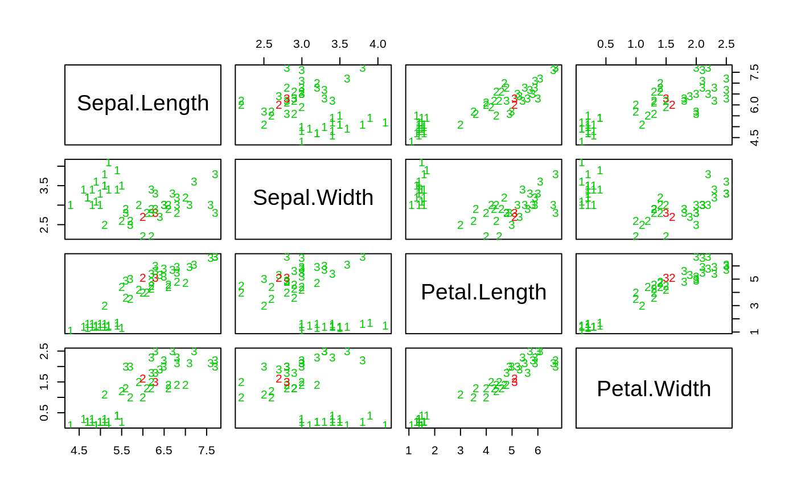

kknn.RdPerforms k-nearest neighbor classification of a test set using a training set. For each row of the test set, the k nearest training set vectors (according to Minkowski distance) are found, and the classification is done via the maximum of summed kernel densities. In addition even ordinal and continuous variables can be predicted.
kknn(formula = formula(train), train, test, na.action = na.omit(), k = 7, distance = 2, kernel = "optimal", ykernel = NULL, scale=TRUE, contrasts = c('unordered' = "contr.dummy", ordered = "contr.ordinal")) kknn.dist(learn, valid, k = 10, distance = 2)
| formula | A formula object. |
|---|---|
| train | Matrix or data frame of training set cases. |
| test | Matrix or data frame of test set cases. |
| learn | Matrix or data frame of training set cases. |
| valid | Matrix or data frame of test set cases. |
| na.action | A function which indicates what should happen when the data contain 'NA's. |
| k | Number of neighbors considered. |
| distance | Parameter of Minkowski distance. |
| kernel | Kernel to use. Possible choices are "rectangular" (which is standard unweighted knn), "triangular", "epanechnikov" (or beta(2,2)), "biweight" (or beta(3,3)), "triweight" (or beta(4,4)), "cos", "inv", "gaussian", "rank" and "optimal". |
| ykernel | Window width of an y-kernel, especially for prediction of ordinal classes. |
| scale | logical, scale variable to have equal sd. |
| contrasts | A vector containing the 'unordered' and 'ordered' contrasts to use. |
This nearest neighbor method expands knn in several directions. First it can be used not only for classification, but also for regression and ordinal classification. Second it uses kernel functions to weight the neighbors according to their distances. In fact, not only kernel functions but every monotonic decreasing function \(f(x) \forall x>0\) will work fine.
The number of neighbours used for the "optimal" kernel should be \( [ (2(d+4)/(d+2))^(d/(d+4)) k ]\), where k is the number that would be used for unweighted knn classification, i.e. kernel="rectangular". This factor \((2(d+4)/(d+2))^(d/(d+4))\) is between 1.2 and 2 (see Samworth (2012) for more details).
kknn returns a list-object of class kknn including the components
Vector of predictions.
Matrix of classes of the k nearest neighbors.
Matrix of weights of the k nearest neighbors.
Matrix of distances of the k nearest neighbors.
Matrix of indices of the k nearest neighbors.
Matrix of predicted class probabilities.
Type of response variable, one of continuous, nominal or ordinal.
Parameter of Minkowski distance.
The matched call.
The 'terms' object used.
Hechenbichler K. and Schliep K.P. (2004) Weighted k-Nearest-Neighbor Techniques and Ordinal Classification, Discussion Paper 399, SFB 386, Ludwig-Maximilians University Munich (https://doi.org/10.5282/ubm/epub.1769)
Hechenbichler K. (2005) Ensemble-Techniken und ordinale Klassifikation, PhD-thesis
Samworth, R.J. (2012) Optimal weighted nearest neighbour classifiers. Annals of Statistics, 40, 2733-2763. (avaialble from http://www.statslab.cam.ac.uk/~rjs57/Research.html)
library(kknn) data(iris) m <- dim(iris)[1] val <- sample(1:m, size = round(m/3), replace = FALSE, prob = rep(1/m, m)) iris.learn <- iris[-val,] iris.valid <- iris[val,] iris.kknn <- kknn(Species~., iris.learn, iris.valid, distance = 1, kernel = "triangular") summary(iris.kknn)#> #> Call: #> kknn(formula = Species ~ ., train = iris.learn, test = iris.valid, distance = 1, kernel = "triangular") #> #> Response: "nominal" #> fit prob.setosa prob.versicolor prob.virginica #> 1 setosa 1 0.00000000 0.00000000 #> 2 virginica 0 0.14191157 0.85808843 #> 3 versicolor 0 1.00000000 0.00000000 #> 4 setosa 1 0.00000000 0.00000000 #> 5 setosa 1 0.00000000 0.00000000 #> 6 versicolor 0 1.00000000 0.00000000 #> 7 versicolor 0 1.00000000 0.00000000 #> 8 setosa 1 0.00000000 0.00000000 #> 9 virginica 0 0.00000000 1.00000000 #> 10 virginica 0 0.00000000 1.00000000 #> 11 versicolor 0 0.81533600 0.18466400 #> 12 setosa 1 0.00000000 0.00000000 #> 13 setosa 1 0.00000000 0.00000000 #> 14 versicolor 0 0.98626616 0.01373384 #> 15 versicolor 0 0.82468933 0.17531067 #> 16 setosa 1 0.00000000 0.00000000 #> 17 versicolor 0 1.00000000 0.00000000 #> 18 setosa 1 0.00000000 0.00000000 #> 19 versicolor 0 1.00000000 0.00000000 #> 20 virginica 0 0.11281774 0.88718226 #> 21 setosa 1 0.00000000 0.00000000 #> 22 virginica 0 0.00000000 1.00000000 #> 23 virginica 0 0.06179930 0.93820070 #> 24 setosa 1 0.00000000 0.00000000 #> 25 virginica 0 0.00000000 1.00000000 #> 26 virginica 0 0.00000000 1.00000000 #> 27 setosa 1 0.00000000 0.00000000 #> 28 virginica 0 0.10197987 0.89802013 #> 29 virginica 0 0.00000000 1.00000000 #> 30 virginica 0 0.00000000 1.00000000 #> 31 setosa 1 0.00000000 0.00000000 #> 32 setosa 1 0.00000000 0.00000000 #> 33 setosa 1 0.00000000 0.00000000 #> 34 versicolor 0 1.00000000 0.00000000 #> 35 versicolor 0 1.00000000 0.00000000 #> 36 versicolor 0 0.59152918 0.40847082 #> 37 virginica 0 0.00000000 1.00000000 #> 38 virginica 0 0.00000000 1.00000000 #> 39 setosa 1 0.00000000 0.00000000 #> 40 setosa 1 0.00000000 0.00000000 #> 41 virginica 0 0.00000000 1.00000000 #> 42 versicolor 0 1.00000000 0.00000000 #> 43 versicolor 0 1.00000000 0.00000000 #> 44 virginica 0 0.00000000 1.00000000 #> 45 setosa 1 0.00000000 0.00000000 #> 46 virginica 0 0.02208192 0.97791808 #> 47 virginica 0 0.00000000 1.00000000 #> 48 setosa 1 0.00000000 0.00000000 #> 49 virginica 0 0.00000000 1.00000000 #> 50 versicolor 0 1.00000000 0.00000000#> fit #> setosa versicolor virginica #> setosa 18 0 0 #> versicolor 0 13 1 #> virginica 0 1 17pcol <- as.character(as.numeric(iris.valid$Species)) pairs(iris.valid[1:4], pch = pcol, col = c("green3", "red") [(iris.valid$Species != fit)+1])data(ionosphere) ionosphere.learn <- ionosphere[1:200,] ionosphere.valid <- ionosphere[-c(1:200),] fit.kknn <- kknn(class ~ ., ionosphere.learn, ionosphere.valid) table(ionosphere.valid$class, fit.kknn$fit)#> #> b g #> b 19 8 #> g 2 122(fit.train1 <- train.kknn(class ~ ., ionosphere.learn, kmax = 15, kernel = c("triangular", "rectangular", "epanechnikov", "optimal"), distance = 1))#> #> Call: #> train.kknn(formula = class ~ ., data = ionosphere.learn, kmax = 15, distance = 1, kernel = c("triangular", "rectangular", "epanechnikov", "optimal")) #> #> Type of response variable: nominal #> Minimal misclassification: 0.12 #> Best kernel: rectangular #> Best k: 2#> #> b g #> b 25 4 #> g 2 120(fit.train2 <- train.kknn(class ~ ., ionosphere.learn, kmax = 15, kernel = c("triangular", "rectangular", "epanechnikov", "optimal"), distance = 2))#> #> Call: #> train.kknn(formula = class ~ ., data = ionosphere.learn, kmax = 15, distance = 2, kernel = c("triangular", "rectangular", "epanechnikov", "optimal")) #> #> Type of response variable: nominal #> Minimal misclassification: 0.12 #> Best kernel: rectangular #> Best k: 2#> #> b g #> b 20 5 #> g 7 119